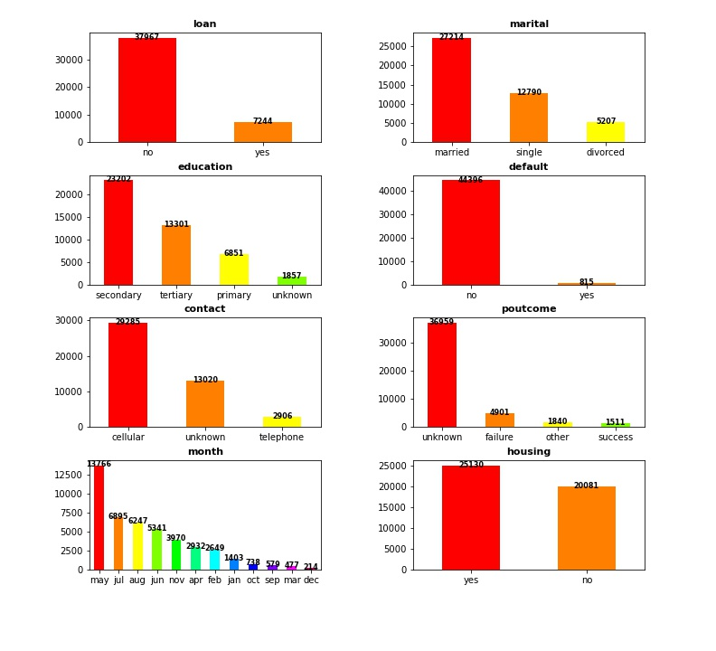
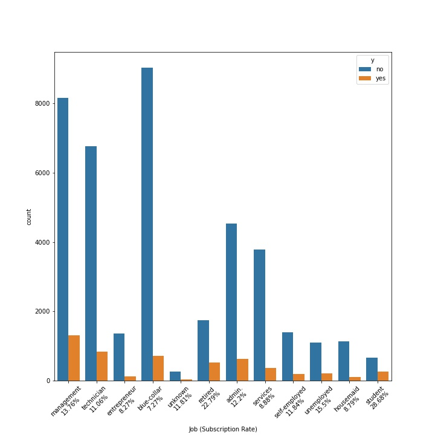
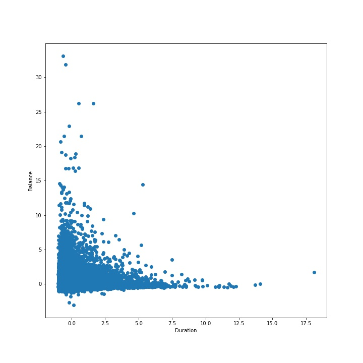
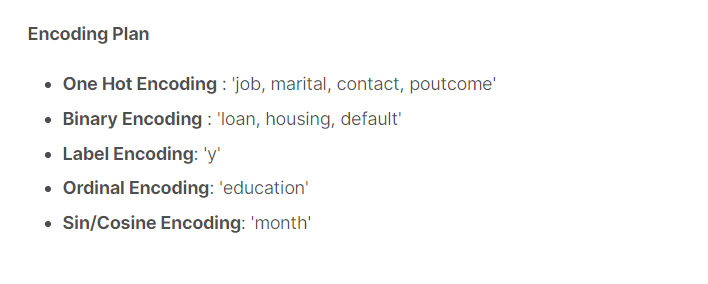
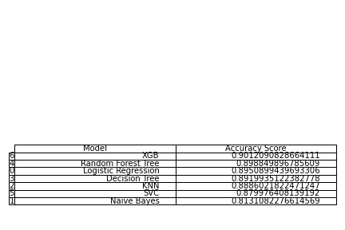
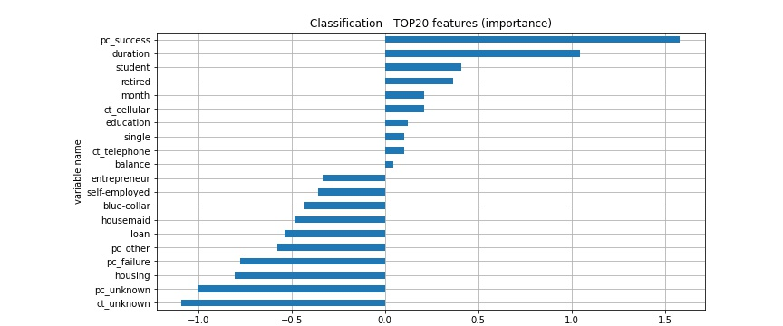
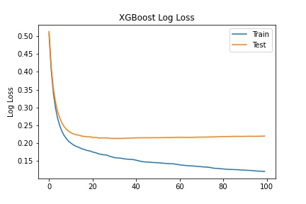
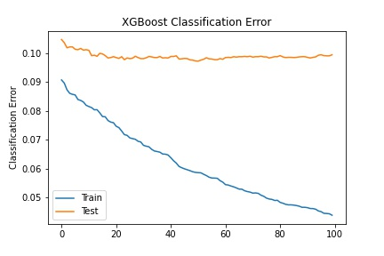
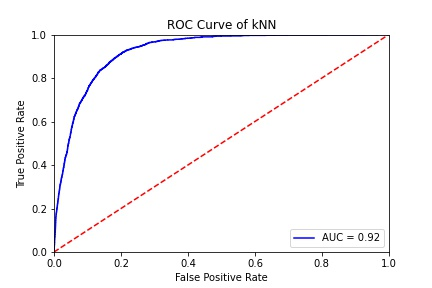

Data Explorartion / EDA
I have used the data from website Kaggle to predict the Subscription rate. Re-organized and modified the data and
visualized them to illustrate the distribution of customers' financial status.
Data Distribution

-
The Y-axis from the graphs represent the count of the data for each column.
-
We are able to see that there are...
-
More people who do not have loan
-
More people who are married
-
More people who completed secondary education.
-
More people who use cellular device for their contact
-
More people who have own housing
-
Most people who joined bank in January.
Job Distribution

-
From the graph above, the outcome of no-subscription is way much higher than the subscription. Among all the jobs,
the lowest category was student and the highest category was blue-collar. However, people who describe themselves as
management had the highest subscription rate.
Linearity of the Data

-
The graph above represents the linearity of the data (X-axis:Duration, Y-axis:Balance). Since it does not have a linearity,
I assume the model with Logistic Regression, and SVC that utilizes the linearity of the data would not perform well compared
to other models.
Encoding Plan

-
I decided to plan encoding like above. Encoded month column into sin/cosine encoding since for month, higher value does not represent
'better' compared to lower value (December is not better than January).

-
Created a model with "Logistic Regression", "Gaussian NB", "KNN", "Decision Tree", "Random Forest", "SVC", and "XGB Classifier"
and compared the performance.
Feature Importance

-
From the graph above, colums "poutcome success" and "duration" had the most postivie effect on the prediction and "poutcome unkown"
and "contact unknown" had the most negative effect on the prediction.
Best Performed Model Evaluation
Log_Loss

Classifictaion Error

ROC Curve
